This week's goal was to design and 3D print a pair of parts that show an RC 2 sliding fit on a resin (SLA) print, as defined in the Machinery's Handbook. The parts also have to be useful, not just a plain hole and shaft. I am making a to-go pill box for supplements: a rectangular box with a lid that slides over it and covers the top and both sides. The sliding lid is the RC 2 fit. The two parts together have to stay under 20 mL, including supports.
The Machinery's Handbook describes the fit this way: "RC 2 Sliding fits are intended for accurate location, but with greater maximum clearance than class RC 1. Parts made to this fit move and turn easily but are not intended to run freely, and in the larger sizes may seize with small temperature changes" [1]. For a lid, that is the behavior I want: it should locate accurately on the box and slide on and off by hand, without rattling.
The limits come from Table 8a of ANSI/ASME B4.1, which lists them in thousandths of an inch for each nominal size range. In RC 2 the hole is class H6 and the shaft is class g5. The table gives the minimum and maximum clearance, and the upper and lower deviation of each part from the nominal size.
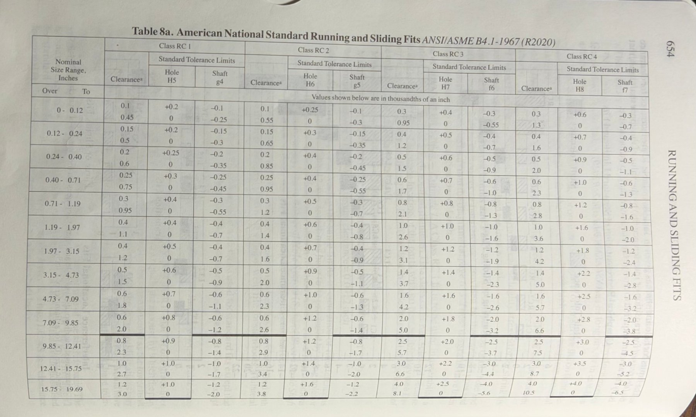
Table 8a from the Machinery's Handbook (page 654). I used the Class RC 2 columns in two rows: 0.71 to 1.19 in for the 20 mm width and 0.40 to 0.71 in for the 11 mm height.
An RC 2 fit is used where a part has to be located accurately but still has to move by hand. Typical examples are locating pins on jigs and fixtures, gears and pulleys that are shifted along a shaft, parts in telescoping assemblies, and low-speed control levers. A lid that slides over a box is the same situation. The lid has to land in the same place every time so it closes flush, and it has to move easily enough to open with one hand. A pill box is carried in a pocket or a bag, so a lid that is too loose would rattle or slide open, and one that is too tight would be hard to open.
I take supplements that are 7.5 mm in diameter and 22 mm long, and I want the box to hold at least two. The box holds them side by side. The lid is a rectangular cover that slides over the box and encloses the top wall and both side walls. It also wraps 2 mm under the bottom of the box on both sides, and those two lips sit in a groove along the bottom edges of the box. The lip height equals the groove height, so the bottom of the assembly is flush.
| Item | Value | Why |
|---|---|---|
| Pill size | 7.5 mm diameter by 22 mm long | The supplements I carry. |
| Cavity (inside the box) | 16 × 24 mm and 8.5 mm tall | Two pills side by side need 15 mm of width, and one pill needs 22 mm of length and 7.5 mm of height. This leaves about 1 mm spare in each direction. |
| Wall thickness | 2 mm | Strong enough for a handled part and still a small volume. |
| Box outside | 20 × 28 mm and 12.5 mm tall | Cavity plus two 2 mm walls in each direction. The 20 mm width is the fit dimension. |
| Lip thickness | 1.5 mm | Sets the height of the groove in the box. The height fit is measured from the box rim to the groove ceiling: 12.5 − 1.5 = 11.0 mm. |
| Volume of both parts | 5.73 mL | From SolidWorks, for the compensated CAD model (see the CAD Design section). The limit is 20 mL including supports. |
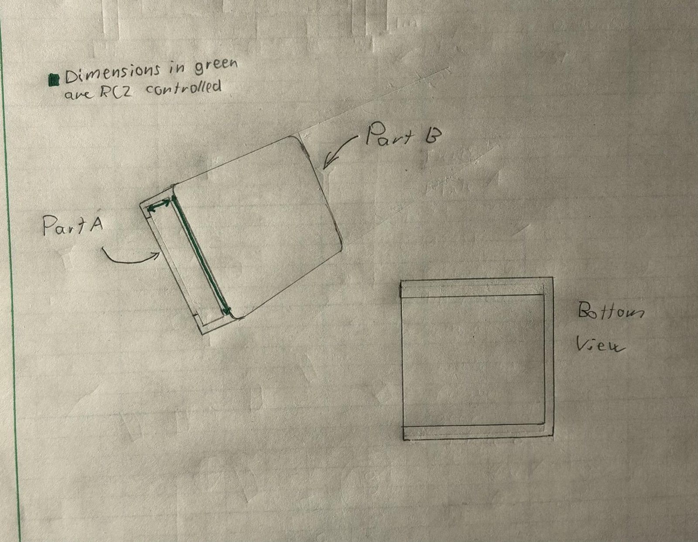
Hand sketch of both parts. Part A is the box, and Part B is the lid that engulfs it. The dimensions in green are controlled by the RC 2 fit. The bottom view shows the lid lips along the two long edges of the box.
Two dimension pairs are controlled by the RC 2 fit. The same clearance is shared by the two surfaces on each pair.
The rest of the lip and groove, including the groove width and the lip's lower and side faces, are not fit surfaces, so they have loose clearance.
The two dimensions are in millimeters, so I converted them to inches to read the table (1 thou = 0.001 in = 0.0254 mm).
| Fit | Table row | Clearance (thou) | Hole H6 (thou) | Shaft g5 (thou) |
|---|---|---|---|---|
| Width, 20 mm = 0.7874 in | 0.71 to 1.19 in | 0.3 to 1.2 | +0.5 / 0 | −0.3 / −0.7 |
| Height, 11.0 mm = 0.4331 in | 0.40 to 0.71 in | 0.25 to 0.95 | +0.4 / 0 | −0.25 / −0.55 |
| Fit | Hole, lid (mm) | Shaft, box (mm) | Clearance (mm) | Target hole (mm) | Target shaft (mm) |
|---|---|---|---|---|---|
| Width, 20 mm | 20.0000 to 20.0127 | 19.9822 to 19.9924 | 0.0076 to 0.0305 | 20.0064 | 19.9873 |
| Height, 11.0 mm | 11.0000 to 11.0102 | 10.9860 to 10.9937 | 0.0064 to 0.0241 | 11.0051 | 10.9898 |
The targets are the middle of each limit range, so there is room on both sides for printing error. For the width fit, the target clearance is (0.3 + 1.2) / 2 = 0.75 thou = 0.0191 mm. For the height fit, it is (0.25 + 0.95) / 2 = 0.6 thou = 0.0152 mm.
The Clear Resin V5 data sheet does not list a shrinkage value [2]. It does describe the standard post-cure I will use: Form Cure L for 5 minutes at room temperature. The closest numbers I found come from Formlabs' design specifications for the Form 4 generation, measured with Grey Resin V5 at 50 micron layers [3]:
For my parts, that means the inside of the lid (the hole) will print smaller than the CAD, and the outside of the box (the shaft) will print larger. Together they take away about 0.12 to 0.16 mm of clearance, which is several times the whole RC 2 window of about 0.02 mm. The printer's own accuracy is also about as big as that window, so I do not expect RC 2 to come out from a single print without measurement. My classmates suggested designing in about 0.3 mm of clearance. I did not use it, because 0.3 mm is about 12 thou, roughly ten times the largest RC 2 clearance, and it would give a loose slide and not an accurate fit.
My plan is to compensate with one offset, δ, applied to each fit surface. The lid's inner dimensions increase by 2δ and the box's outer dimensions decrease by 2δ. I start with δ = 0.03 mm, from the Formlabs data, and I will adjust it after I measure the first print.
| Dimension | Target (mm) | CAD value with δ = 0.03 mm (mm) |
|---|---|---|
| Lid inner width (hole) | 20.0064 | 20.0664 |
| Box outer width (shaft) | 19.9873 | 19.9273 |
| Lid inner height (hole) | 11.0051 | 11.0651 |
| Box rim to groove ceiling (shaft) | 10.9898 | 10.9298 |
I modeled both parts in SolidWorks. Every dimension that matters for the fit is driven by a global variable, so changing one number, the compensation offset δ, updates the box and the lid together. The variables are in the two equation tables below. The box and the lid each carry the same list, and each part's sketches are tied to the variables with equations.
These are the values the variables evaluate to with δ = 0.03 mm.
| Variable | What it controls | Equation | Value (mm) |
|---|---|---|---|
| lid_in_w | Lid inner width (hole, width fit) | W_hole_t + 2δ | 20.0664 |
| box_w | Box outer width (shaft, width fit) | W_shaft_t − 2δ | 19.9273 |
| lid_in_h | Lid inner height, inner top wall to lip top (hole, height fit) | H_hole_t + 2δ | 11.0651 |
| box_rim_groove | Box rim to groove ceiling (shaft, height fit) | H_shaft_t − 2δ | 10.9298 |
| box_h | Box total height | box_rim_groove + lip_t | 12.4298 |
| cav_w | Cavity width | box_w − 2 × wall | 15.9273 |
| cav_h | Cavity height | box_h − 2 × wall | 8.4298 |
| cav_l, box_l | Cavity length and box length | 24, and cav_l + 2 × wall | 24 and 28 |
| groove_w, groove_h | Groove in the box (not a fit surface) | lip_w + 0.5, and lip_t | 2.5 and 1.5 |
| lid_w, lid_h | Lid outside width and height | lid_in_w + 2 × wall, and lid_in_h + wall + lip_t | 24.0664 and 14.5651 |
The cavity comes out at 15.93 mm by 8.43 mm, which still holds two 7.5 mm pills side by side (15 mm needed across) with 22 mm of the 24 mm length used by a pill.
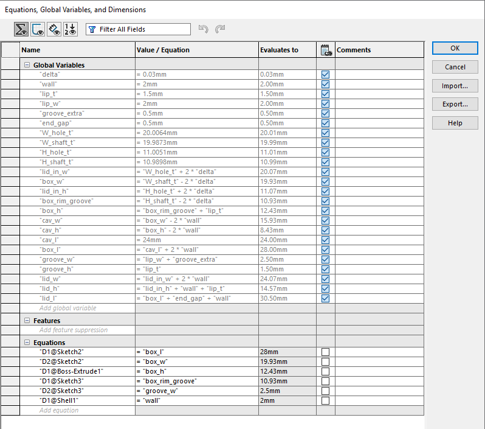
Box: the global variables and the equations that drive the box sketches (box length, box width, box height, the rim-to-groove height, the groove width, and the shell wall).
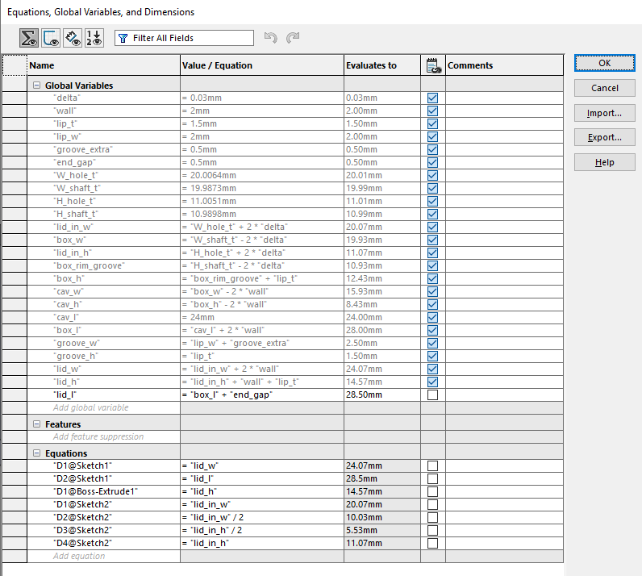
Lid: the same variables, with the equations that drive the lid sketches (outer width, outer height, and the inner width and height of the cut).
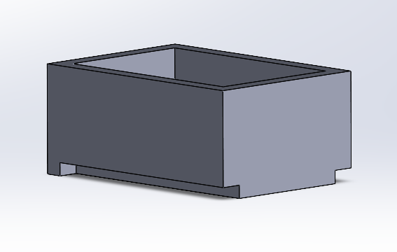
Part A, the box: a rectangular box with an open top for the pills. A groove is cut into the bottom edge, where the lid's lip sits.
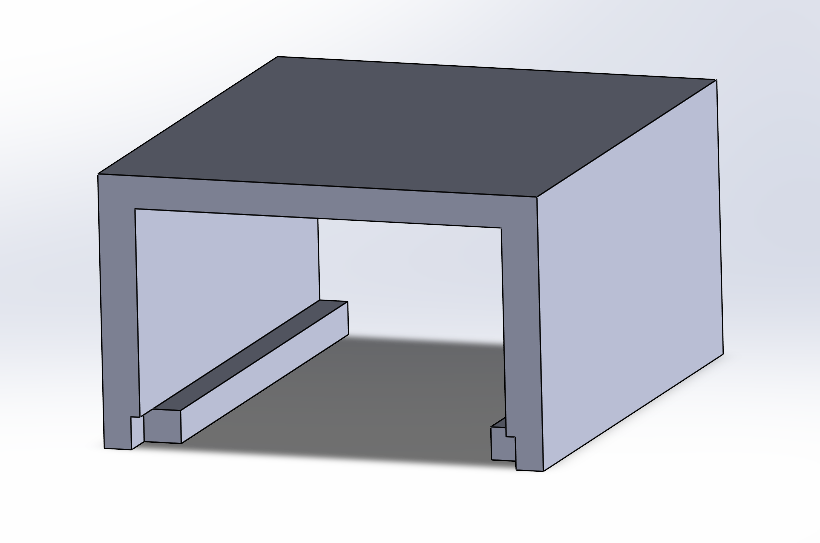
Part B, the lid: a cover that goes over the top and both sides of the box. A small lip along the bottom inside edge of each side wall goes into the groove in the box.
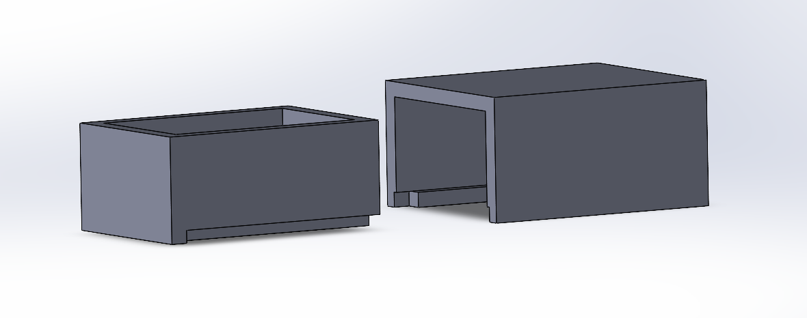
Exploded view: the box on the left and the lid on the right.
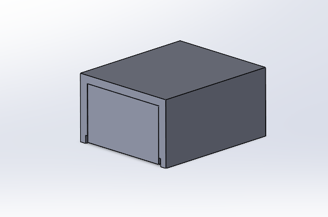
Assembled view: the lid slid over the box. The bottom of the box and the bottom of the lid lips are flush.
The two parts together have to stay under 20 mL including supports. I checked the volume of each part with Mass Properties in SolidWorks.
| Part | Volume (mm³) | Volume (mL) |
|---|---|---|
| Box | 2933.54 | 2.93 |
| Lid | 2799.94 | 2.80 |
| Total | 5733.48 | 5.73 |
That is under 30 percent of the limit, which leaves plenty of room for supports. The volume of the supports will be added in the preprocessing section.
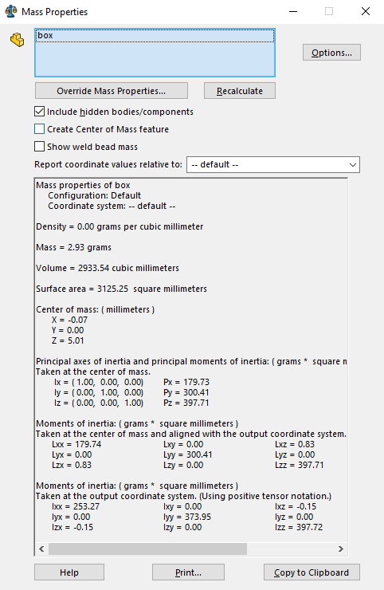
Box: 2933.54 mm³.
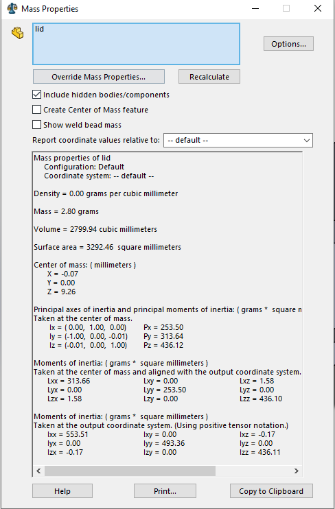
Lid: 2799.94 mm³.
I prepared the print in PreForm for a Formlabs Form 4 printing Clear Resin V5. The box and the lid went on one build plate.
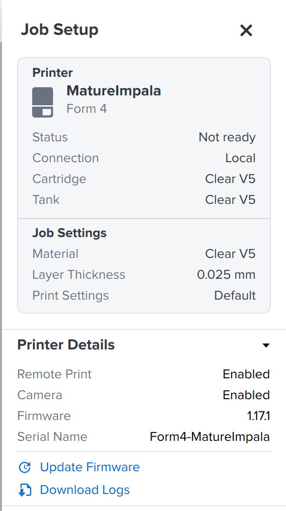
Job setup: the Form 4 named MatureImpala, with a Clear V5 cartridge and tank, Clear V5 as the material, a layer thickness of 0.025 mm, and the default print settings.
| Item | Value |
|---|---|
| Machine | Formlabs Form 4 (MatureImpala), firmware 1.17.1 |
| Material | Clear Resin V5 |
| Layer height | 0.025 mm |
| Print time | 1 h 1 min |
| Wall thickness | 2 mm (set in CAD, the part is printed solid) |
| Total volume with supports | 10.16 mL |
| Allowance for shrinkage | δ = 0.03 mm per fit surface, 0.12 mm of total clearance (see below) |
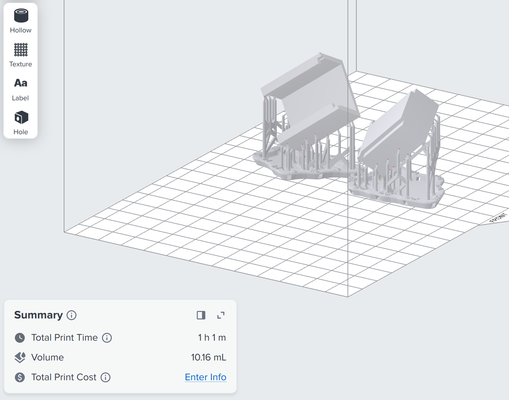
Layout and summary: the box and the lid on one plate, each tilted on its own supports. The summary shows a total print time of 1 h 1 min and a volume of 10.16 mL.
Layout: both parts are on one build plate with space between them, so the supports of one do not touch the other.
Orientation: I printed both parts tilted, and not flat on the plate. Tilting them keeps the area of each layer small, which lowers the force needed to peel each layer off the tank, and it avoids large flat faces lying parallel to the plate. The supports are under the lower side of each part.
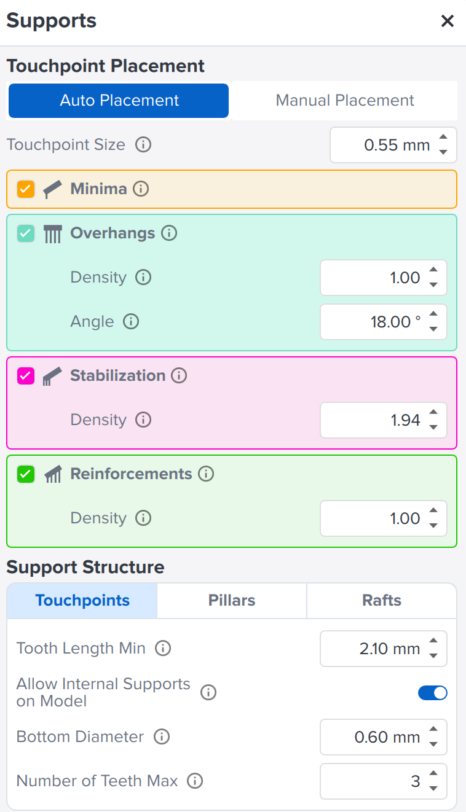
Support settings: auto placement, with all four support types turned on.
| Setting | Value | What it does |
|---|---|---|
| Touchpoint placement | Auto | PreForm places the supports. |
| Touchpoint size | 0.55 mm | The size of the contact point on the part. A smaller contact leaves a smaller mark. |
| Minima | On | Supports the lowest points of each part. |
| Overhangs | On, density 1.00, angle 18° | Supports surfaces that overhang past the 18° angle. |
| Stabilization | On, density 1.94 | Adds supports that keep the part steady during printing. |
| Reinforcements | On, density 1.00 | Strengthens the supports. |
| Tooth length (min) | 2.10 mm | The shortest tooth at the end of a support. |
| Internal supports on model | Allowed | Supports can also be placed on interior surfaces. |
| Bottom diameter | 0.60 mm | The diameter of the support at the base of a tooth. |
| Teeth (max) | 3 | The most teeth one support can have. |
The slicer shows 10.16 mL for the whole print, which includes the supports. SolidWorks gave 5.73 mL for the two parts alone, so the supports account for about 4.4 mL. That is under the 20 mL limit, with about 9.8 mL to spare.
The CAD already includes the shrinkage allowance from section 1. I applied δ = 0.03 mm to each fit surface, so the lid's inner width and height are 2δ larger than the RC 2 target and the box's outer width and rim-to-groove height are 2δ smaller. Over the two parts that is 0.12 mm of extra clearance in CAD, which is the amount I expect the printer to take away. The Formlabs numbers I used were measured at 50 micron layers [3], and I print at 25 microns, so δ is a starting estimate that I will adjust after I measure the first print.
SolidWorks files and STL files for each part. Put all of the SolidWorks files in the same folder before opening them.
AI was used to help find sources 2 and 3 and to draft the text of this page from my notes, calculations, and sketch. I reviewed and edited the draft.